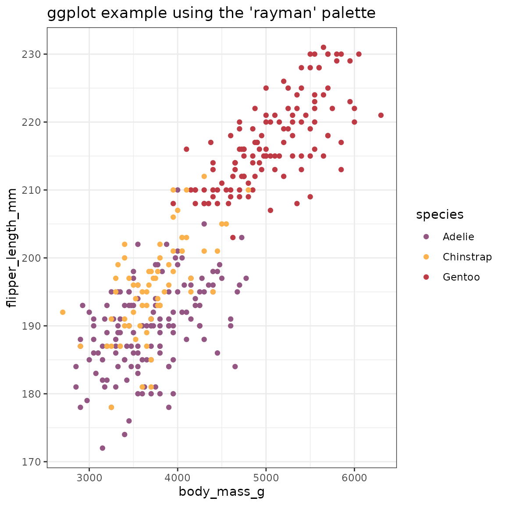
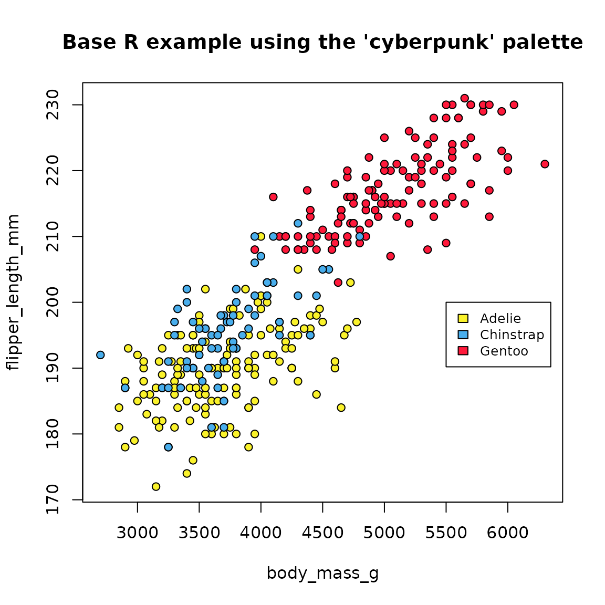

Here, we use the penguins dataset from the
palmerpenguins package to provide simple examples of how
gameR can be used to customize a plot using either
ggplot2 or base R. We will plot a scatter plot of flipper
length (in mm) against body mass (in g) with the points colored by
species.
Using {ggplot2}
To use palettes from gameR in ggplot, a palette can be specified via
either scale_color_manual() or
scale_fill_manual() to adjust the color or fill
respectively. When specifying a palette, the values =
argument must be used. Calling the scale_* function will
not allow a palette to be specified if no named argument is used.
penguins %>%
ggplot(aes(x = body_mass_g, y = flipper_length_mm, color = species)) +
geom_point() +
theme_bw() +
ggtitle("ggplot example using the 'rayman' palette") +
scale_color_manual(values = gameR_cols("rayman"))
Using base R
If base R plotting is being used, the bg argument can be
used to specify the color of the points. Here we use
gameR_cols() in combination with unclasss() to
color by species.
par(bg = "white")
attach(penguins)
plot(
x = body_mass_g,
y = flipper_length_mm,
main = "Base R example using the 'cyberpunk' palette",
cex = 1,
pch = 21,
bg = gameR_cols("cyberpunk")[unclass(species)]
)
legend(5500, 200,
legend = attr(unclass(species), "levels"),
fill = gameR_cols("cyberpunk"), cex = 0.8
)